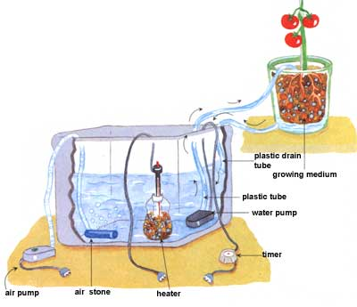

Assembling the innovative 500-watt dual-bulb HID Gro-Lite from The Light Manufacturing Co. To the right of the reflector on the table are dual ballasts in their aluminum heat-sink case, aroll of reflective mylar film to go on the wall behind the lights, an exhaust fan, and ducting to pull cooling air through the reflector and blow it outside. Above, right: The light Manufacturing Co.,'s dual-spectrum and dual-horizontal reflector.